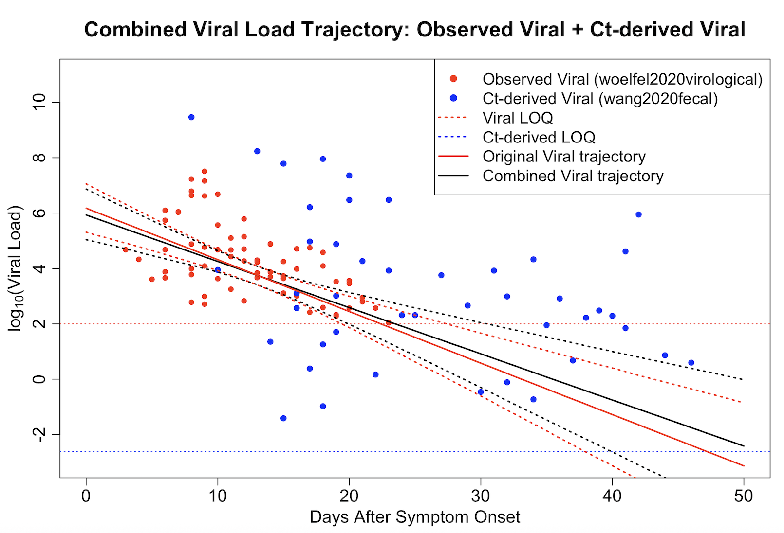

Integrating heterogeneous laboratory data (viral load & Ct values) using a unified Bayesian framework
Viral shedding data are critical for understanding infectious disease dynamics, but are often fragmented across different measurement types, such as viral concentration and PCR cycle threshold (Ct) values. These data sources have different scales and censoring mechanisms, making direct comparison difficult.
In this project, I developed a Bayesian hierarchical model in Stan to integrate these heterogeneous data sources into a unified framework. The model estimates a shared latent viral load trajectory, improving inference on infection dynamics and shedding patterns.

The integrated model produces a unified viral load trajectory by combining observed viral concentration data with Ct-derived estimates. Compared to using a single data source, the joint model provides more stable and informative estimates, particularly in late-stage infection where measurements are sparse or censored.
Accurate estimation of viral shedding is essential for understanding infectiousness, guiding isolation policies, and improving epidemiological modeling. This framework demonstrates how combining heterogeneous data sources can enhance inference and support more reliable public health decision-making.